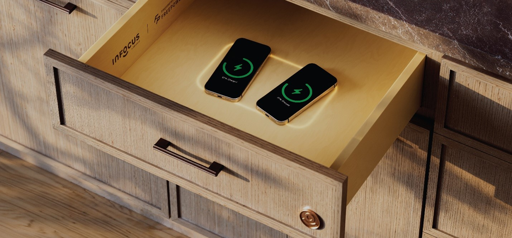

厨房智能硬件 / 厨房空间设计
给手机留个抽屉：Fabuwood × FreePower InFocus Drawer 今日开始供货
无线充电嵌入橱柜抽屉，让手机与耳机从台面退场；新品11月16日起经美国授权经销商供货。

Fabuwood 与 FreePower 合作推出的 InFocus Drawer 于 11 月 16 日开始通过美国授权经销商供货。产品把无线充电模块整合进橱柜抽屉，让兼容设备放入抽屉即可充电。发布方将其定位为帮助家庭把手机收起、减少屏幕干扰的设计；无线充电兼容性和购买条件应以实际经销商信息为准。
它没有增加一块新的厨房屏，而是把数字设备的停放与充电藏进既有家具。对厨房设计而言，插座、充电线和手机在台面上的可见度开始成为空间体验问题；这种做法能否普及，还取决于橱柜改装门槛、充电速度、散热与日常收纳便利。
Business Wire｜Fabuwood × FreePower 发布 InFocus Drawer · 2026-11-02（公告）；2026-11-16（开始供货）Fabuwood｜InFocus Drawer 官方产品图 · 产品配图；页面发布日期早于本期供货起始日：2026-11-16；合作发布公告：2026-11-02。